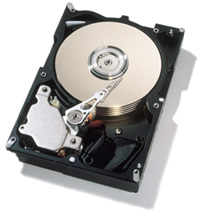

 Disk
Drive Control
Photo: Courtesy IBM
Bits of information are stored on and retreived from computer
disk drives using a magnetic read/write head. This information
is arranged on concentric tracks, nominally circular in shape. Positioning
the read/write head over the
appropriate track is a controls problem which has a significant
impact on the performance of the drive.
Normal operation of a disk drive will require access to many different tracks. The faster the read/write head can be moved between tracks, the faster information can be stored or retrieved. There are economic and physical constraints on this task. The fast transition between data tracks is usually called "seeking".
The sensitivity of the position of the read/write head to external disturbances is also an important consideration in the design of controllers for disk drive servos. As computer disk drives become more mobile in laptop or handheld applications, new bumps and vibrations become common disturbances which must not affect the positioning control of the read/write head. Maintaining the read/write head over a particular data track is usually called "following".
The designed controller needs to address the concerns of both
seeking and following for the final disk drive performance to be both fast
and reliable. Work in this lab deals with the analysis of and design of
controllers for disk drives.
Current research projects include:
[Home]
[People]
[Research]
[Publications/Theses] [Resources]